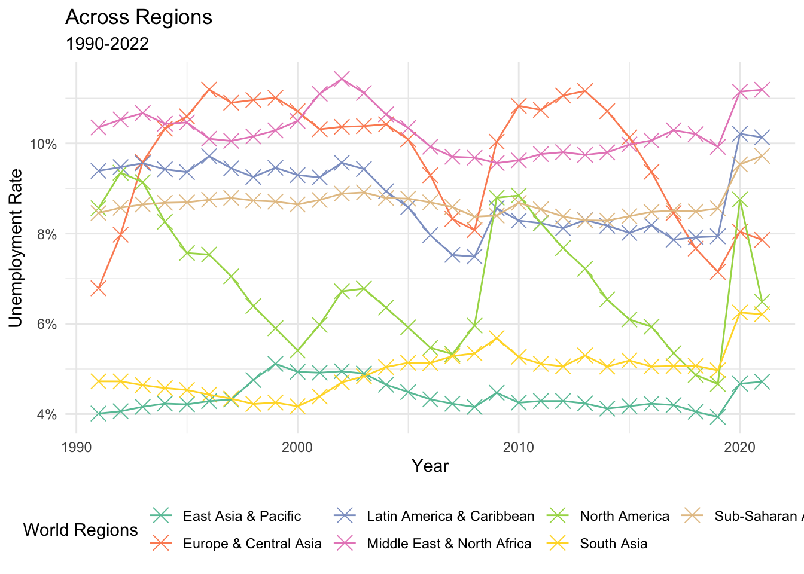
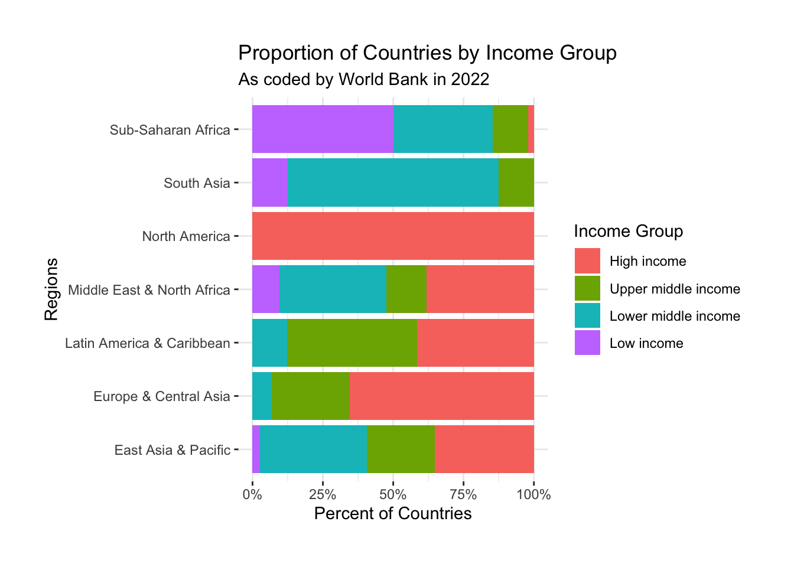

# This File has unemployment rate for different countries across time
data_unemp <- read_csv("data/API_SL.UEM.TOTL.ZS_DS2_en_csv_v2_4570923/API_SL.UEM.TOTL.ZS_DS2_en_csv_v2_4570923.csv", skip = 3)
# This file has classification according to regions and income groups countries are in today
data_region <- read_csv("data/API_SL.UEM.TOTL.ZS_DS2_en_csv_v2_4570923/Metadata_Country_API_SL.UEM.TOTL.ZS_DS2_en_csv_v2_4570923.csv")
# Merging
working_Data <- data_unemp %>%
left_join(
data_region %>% select(c("Country Code","Region","IncomeGroup")),
by = "Country Code") %>% # Joining According to Country Code
as_tibble() %>%
filter( !is.na(Region) # Removing Countries which do not have a Region Assigned
)
# Converting to Long
working_Data_long <- working_Data %>%
pivot_longer(
cols = starts_with(c("19","20")),
names_to = "Year",
values_to = "Unemployment"
) %>%
select(
c("Country Name", "Region","IncomeGroup","Year","Unemployment")
) %>%
mutate(
IncomeGroup = factor(IncomeGroup, levels = c("High income", "Upper middle income", "Lower middle income","Low income"))
)
# Taking Years for which Unemployment NAs are not a big proportion
summary_year <- working_Data_long %>%
group_by(Year) %>%
summarize(
n_nas = sum(is.na(Unemployment))
)
# Post 1990 NAs are just around for 15% of the countries
working_Data_long <- working_Data_long %>%
mutate(
Year = as.integer(Year)
) %>%
filter( Year >= 1991 & !is.na(IncomeGroup))PPOL670 Assignment 4
Unemployment in Labor Force
To answer this, we look at the unemployment data from across the world.1.
How has World Changed?
working_Data_long %>%
ggplot( aes( x = Year, y = Unemployment)) +
geom_boxplot(aes(group = Year),show.legend = FALSE, outlier.alpha = 0.5, alpha = 0.5) +
geom_smooth(method = "lm", color = "blue")+
labs(x = "Year", y = "Unemployment Rate", title = "Across World") +
theme_minimal() +
scale_color_manual(values = RColorBrewer::brewer.pal(7, "Set2")) +
theme(
legend.position = "bottom"
)In this figure, we see that over the years the levels of unemployment has reduced across the world, and the disparity has also reduced. In addition, the number of outlier have come together. Since this is a global impact, it could be because of global economic policies on poverty, job creation, and equal access to opportunities, in addition to improved national policies.
What About Regions?
working_Data_long %>%
group_by( Year, Region) %>%
summarise(
mean_unemp = mean(Unemployment, na.rm = TRUE)
) %>%
ggplot( aes( x = Year, y = mean_unemp/100, group = Region, color = Region)) +
geom_point(shape = 4, size = 4) +
geom_line( linetype = "solid") +
labs(
x = "Year",
y = "Unemployment Rate", title = "Across Regions",
subtitle = "1990-2022",
color = "World Regions") +
theme_minimal() +
scale_y_continuous(labels = scales::percent) +
scale_color_manual(values = RColorBrewer::brewer.pal(7, "Set2")) +
theme(
legend.position = "bottom"
)
This line graph shows the disparity of unemployment rate between regions. Regions such as East Asia, South Asia, and Sub-Saharan Africa have lesser fluctuations over the years, whereas regions such as North Africa, Europe and Central Asia have significant fluctuations. This could be because of effective economic policies, especially where unemployment rates dip in North Africa and Europe and Central Asia. Furthermore, the overall spike in unemployment rates in late 2019 could be explained by the emeregence of Coronavirus in Wuhan, China.
Across Countries in Different Income Groups
working_Data_long %>%
filter( Year == 2021) %>%
group_by(Region) %>%
mutate( n_countries = n()) %>%
group_by(IncomeGroup, add = TRUE) %>%
summarise(
perc = n()/first(n_countries)
) %>%
ggplot( aes( x = Region, y = perc, fill = IncomeGroup)) +
geom_bar(stat = "identity", position = "fill") +
scale_y_continuous(labels = scales::percent) +
scale_color_manual(values = RColorBrewer::brewer.pal(7, "Set2")) +
theme(
legend.position = "right"
) +
coord_flip() +
labs(
y = "Percent of Countries",
x = "Regions", title = "Proportion of Countries by Income Group",
subtitle = "As coded by World Bank in 2022",
fill = "Income Group") 
When it comes to High Income, North America (100%) and Europe & Central Asia (62%) have the highest rates in comparison to the other regions. Latin America & Caribbeans (42%-43%) comes close to two regions, and ranks 3rd in High Income rates. South Asia (70%) and Sub-Saharan Africa (48%-49%) rank highest in Lower Middle Income, while MENA region and East Asia & Pacific (35%-36%) rank 3rd and 4th in the same category of income. On Low Income, Sub-Saharan Africa ranks highest with 50 percent of its population with high unemployment and poverty rates. Overall, the graph shows that Sub-Saharan Africa has the highest Low Income rates, while North America and Europe & Central Asia have the greatest rank High Income rates.
Change Across Regions and Countries in Different Income Groups in them
working_Data_long %>%
filter( Year %in% c("1991", "2021")) %>%
pivot_wider(
id_cols = c("Country Name", "Region", "IncomeGroup"),
names_from = Year, values_from = Unemployment
) %>%
ggplot( aes(x = `1991`/100, y = `2021`/100)) +
geom_point() +
facet_grid(IncomeGroup~Region) +
scale_x_log10(labels = scales::percent) +
scale_y_log10(labels = scales::percent) +
geom_abline( alpha = 0.3) +
labs(
y = "Unemloyment in 2021",
x = "Unemloyment in 1991", title = "Change across Income Groups X Regions") +
theme( text = element_text(size = 17),
panel.spacing = unit(2, "lines"))We have used log base 10 scale for both x and y axis here.
Footnotes
Data sourced from World Bank Open Data Reository↩︎